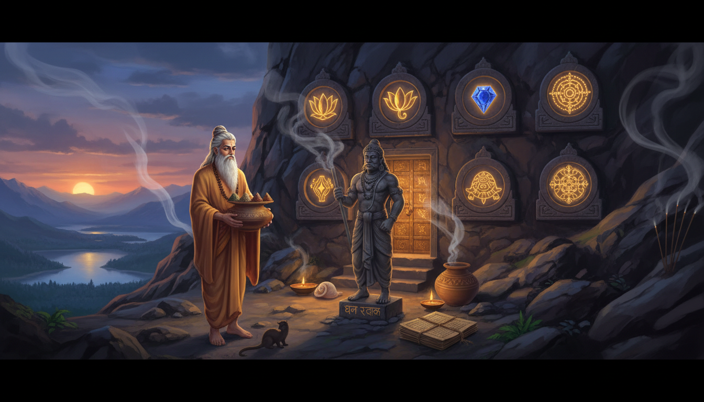

Most people who consult a jyotishi about money are not asking for a lot of money. They are asking why money is invisible. The salary comes, and goes. The business runs, and the account is empty on the twenty-eighth. There is a house in the family that nobody can sell. There is a share of an ancestral thing that was never divided. There is a locked cupboard, a disputed plot, a fixed deposit in a dead man's name. The chart has a strong second house and a good eleventh lord and a respectable Jupiter, and still nothing accumulates.

This article is about the rishi the tradition puts behind exactly that condition — not poverty, but concealed wealth: wealth that exists, belongs to the line, and does not reach the hand.
His name is Pulastya (पुलस्त्य).
He is not a famous rishi in the popular sense. He composed no hymn that people chant. He is not a warrior-sage, not a curse-sage, not a river-bringer. What the sources give him instead is stranger and far more useful for a remedial practice: he is the transmitter of a Purana, the grandfather of the treasurer of the gods, the grandfather of the enemy of the gods, the father of the man who took the treasures of Lanka, and the sage whose gaze — not his mantra, not his fire — is the thing that made a line.
And he is the tradition's own route to the navanidhi, the nine treasure vaults.
Part One: The Rishi the Sources Actually Describe
1. He emerged from the ear
Start with the origin, because in this tradition origin is function.
Pulastya (Sanskrit: पुलस्त्य) is one of the ten Prajapati, and one of the mind-born sons of Brahma in Hinduism. He is also one of the Saptarshi (Seven great sages) in the first age of Manu, the Manvantara.
And then the detail that distinguishes him from the other nine:
The sage is said to have emerged from the ear of Brahma in the Bhagavata Purana.
The ear. Not the mouth, not the mind, not the eye, not the heart. In a system where the other mind-born sons come from Brahma's various limbs and faculties, Pulastya is the one who comes out of the organ of hearing.
This is not decoration. It describes the only kind of rishi he is: a receiver and passer-on of sound. Everything the sources later record about him is consistent with that — he does not originate, he carries. He receives the Vishnu Purana and hands it to Parashara. He answers Narada. He instructs Bhishma. He narrates to a listener. He is, structurally, a channel with a vault at the end of it.
The working form: Before any wealth remedy, establish the audibility of the line. A family whose wealth has gone invisible is almost never a family with no assets — it is a family in which information about assets stopped travelling. Someone died without telling. A will was never read aloud. A partition was agreed in a room and never spoken of again. The remedy that follows from Pulastya's own origin is therefore not first a fire remedy but a hearing remedy: the chain of telling must be repaired before anything is asked for. Practically, this means the rite below is opened by naming who received what from whom — aloud, in front of a witness — and only then does the offering begin. If you cannot say the chain, you do not have a vault. You have a rumour.
2. The house divides in two, and both halves are about treasure
The genealogical material is unusually specific, and it is the whole engine of this article:
The Ramayana describes Pulastya's wedding to Manini, and the birth of his son, Vishrava. […] Vishrava went on to have two wives: one was Kaikesi who gave birth to Ravana, Shurpanakha, Kumbhakarna, and Vibhishana; and another was Ilavida, and had a son named Kubera. Pulastya also becomes the father of Agastya.
Read that slowly. One grandfather. Two grandsons.
- Kubera, son of Ilavida — the god of wealth, treasurer of the devas, king of the yakshas, regent of the north.
- Ravana, son of Kaikesi — the king of Lanka who took Kubera's Lanka and his flying chariot, and whose city was described as a city of gold.
This is not a genealogical curiosity. It is the tradition's way of saying something extremely precise about wealth: the same house produces the keeper and the taker, and they are cousins. The vault and the raid on the vault come from one grandfather. Anyone who has handled a family inheritance knows exactly how true this is, and how little it has to do with morality.
The scriptures describe that Kubera once ruled Lanka, but was overthrown by his half-brother Ravana, later settling in the city of Alaka in the Himalayas.
So Kubera is a displaced wealth deity. He is not a god who was always in his own house. He is a god who lost his capital, moved north, and kept the treasury anyway. That is the single most useful fact in this whole article for a family whose wealth has been taken, partitioned badly, or is held by somebody else.
The working form: When wealth is held by another party — a brother, a tenant, a bank, a court, a co-heir — do not invoke the deity of gain (Lakshmi on her own). Invoke the deity of displaced treasure, who lost his own city and remained treasurer. Kubera's rite is the rite of the asset that is not in your hand. Lakshmi's rite is the rite of the asset that arrives. Most people with an invisible-money problem are praying for arrival when their actual condition is displacement, and the deity for displacement is the grandson of Pulastya.
3. Mount Meru: the curse that made a bloodline
The story that produces Vishrava is the strangest passage in the sources, and it is the one that gives this article its central image.
Once, Pulastya was engaged in austerities in the ashrama of Trinabindu, on the slopes of Mount Meru. Even as he was engaged in a penance in solitude, he was disturbed by a number of youthful maidens, the daughters of other sages, naga maidens, as well as apsaras. They played their musical instruments and danced, seeking to divert his attention. Enraged, Pulastya declared that she among them who fell under his gaze would instantly get impregnated. Terrified of the Brahmin's curse, the girls vanished. During this moment, Manini, the daughter of Trinabindu, who had not been present when the curse was invoked, wandered near the sage, searching for her friends. She found herself pregnant, and rushed to report her condition to her father. The sage Trinabindu requested Pulastya to marry his daughter, and the latter agreed, and so the two lived together in the ashrama. Pleased with his wife's virtuous conduct, Pulastya declared that their child would inherit her virtue, and would be named Vishrava.
Note what kind of power this is. It is not a mantra. It is not a weapon. It is not a boon granted by another god. It is the gaze itself — a look that makes something grow whether or not it was intended, and cannot be recalled once spoken.
And note the mechanism of the marriage: the curse was aimed at a group, the effect fell on one person who was not there when it was spoken, and the resolution was not to undo the curse but to legitimise the result — the sage married the woman, and then blessed the child with the mother's virtue and gave him a name (Vishrava, "fame", "widely heard").
The working form: This is the exact structure of inherited wealth trouble, and it is why the remedy must be a rite of legitimation, not of cancellation. A family curse in this sense is rarely "something evil was done to us." It is usually this: a transfer happened that was never formally sanctioned. Land occupied without a deed. A grandfather's money moved into one son's name "temporarily." A daughter's share never written down. A child born outside the recorded line. The energy is not evil — it is unlegitimated, and unlegitimated growth behaves exactly like Pulastya's gaze: it produces an heir nobody planned for. So do not try to cancel it. Bless it and name it. That is what the sage did. That is the pattern.
4. He is the pipeline, not the author
The Puranic role is explicit:
He serves as the medium through which some of the Puranas were communicated to the mankind. He received the Vishnu Purana from Brahma, and communicated it to Parashara, who made it known to mankind.
In the text Pashupati Purana, the sage Pulastya narrated the story of the purana to Bhishma.
Pulastya responds to the questions of Narada in the Vamana Purana by reciting legends.
And the Bhishma meeting has a location and a ritual shape:
Once, Bhishma lived near the sacred source of the river Ganga, called Gaṅgādvāra. Pulastya makes his presence known before Bhishma, pleased by his austerities. Bhishma offers libations of water and pays his respects to the sage. Pleased, Pulastya instructs Bhishma regarding the path of dharma, which itself had been taught to him by Brahma.
Look at the sequence: libation of water first, then instruction. Not instruction, then gift. The water comes first. In every Pulastya encounter, the human gives the water and the sage gives the chain.
The working form: In this tradition, a remedy that cannot state its transmission is considered unsupported. Pulastya is the tradition's own proof that transmission is a real substance — Brahma to Pulastya, Pulastya to Parashara, Parashara to the world; and Pulastya to Bhishma directly. So when you perform the rite below, write down the chain: this practice, received from my teacher, received from his, traced to Pulastya, who received from Brahma. If your chain is broken, say so honestly at the start of the rite. An admitted gap is a link. A fabricated chain is a break.
Two more fragments matter, and both widen the geography:
In Thai National epic Ramakien, Pulastya is called Latsatian. He was the second king of Lanka and the paternal grandfather of Thotsakan.
The partially excavated ancient archaeological mounds of Theh Polar in Kaithal district of Haryana in India is associated with Pulastya.
So the tradition places him as a king of Lanka in one telling, and anchors his living memory in a mound in Haryana in another. A rishi of the treasury who is also remembered as a king is exactly the figure you want for property and hoards.
Part Two: The Nine Vaults
5. What a nidhi is
Now the object of the rite. The source is compact and unusually candid about the limits of the knowledge:
Nidhi (Sanskrit: निधि, romanized: nidhi) is a Sanskrit term meaning "treasure". It is generally used to indicate the nine treasures called navanidhi (Sanskrit: नवनिधि) belonging to Kubera, the god of wealth. According to tradition, each nidhi is personified as having a guardian spirit, with some Tantrikas worshipping them. The nature and characteristics of nidhis have remained largely unexplained and have not been fully understood.
Three things are being said, and each is a licence for practice:
- The nine belong to Kubera — the grandson of Pulastya. The chain is not decorative; it is the title deed.
- Each has a guardian spirit, and some Tantrikas worship them. This is not folk superstition borrowed from outside; the tradition itself records that these nine are worshipped as persons.
- Their nature is not fully understood — the tradition admits the gap. That admission matters for how you handle them: with respect and without invented certainty.
6. The nine, with their symbols
According to the Amarakosha and the Padma Purana, as recorded in the source:
| Nidhi | Meaning | Symbolism |
|---|---|---|
| Mahapadma | "great lotus flower" | Twofold Himalayan lake |
| Padma | "lotus flower" | Himalayan lake |
| Shankha | "conch" | Conch shell |
| Makara | "crocodile" | Black antimony |
| Kacchapa | "tortoise" | Turtleshell |
| Mukunda | "a particular precious stone" | Quicksilver |
| Kunda | "jasmine" | Arsenic |
| Nila | "sapphire" | Antimony |
| Kharva | "dwarf" | Firebaked vessel |
Read the symbolism column carefully, because it is not a list of valuables. It is a list of substances, and several of them are not money at all.
Antimony appears twice — once as Makara (black antimony) and once as Nila, whose name means sapphire but whose traditional material is antimony. Antimony sulphide is the base of surma / kajal, the collyrium put in the eye. The symbol of two of the nine vaults is the thing you put in your eye.
Quicksilver is the symbol of Mukunda. Mercury is the rasa of alchemy — the liquid that will not be held, the metal that behaves like a living thing.
Arsenic is the symbol of Kunda, whose name means jasmine. This is not an error in the source; it is the ordinary double-speak of rasa-shastra, where a poison and a flower share a name because in the alchemical vocabulary the two are the same category of substance handled differently. Poison, correctly measured, is medicine.
Kharva — "dwarf" — whose symbol is a firebaked vessel. The ninth vault is not a substance at all. It is a container made of clay and hardened by fire. That is the vessel that holds the other eight.
The working form: Before you do a wealth rite, ask which of the nine is actually missing. If the answer is "money", you have not answered. The nine are not nine amounts of cash. They are:
- the lake (a source that refills — income, water rights, a lineage of clients),
- the conch (the sound that announces value — reputation, name, credit),
- the antimony (the eye that recognises value — judgment, appraisal, the ability to see what a thing is worth),
- the tortoise (the shell that withdraws and survives — savings, insurance, slowness),
- the quicksilver (the thing that will not be held — liquidity, cash flow, speculation),
- the jasmine/arsenic (the poison that heals — debt, leverage, a liability correctly managed),
- the sapphire (the stone that endures — land, gold, heirloom),
- the firebaked vessel (the container — the household, the deed, the trust, the entity that legally holds),
- the great lotus (the doubled lake — the second and third source, the diversification).
That is a complete financial anatomy of a family, and it is at least a thousand years old. Most "money problems" are one missing column. A family with income and no vessel loses everything. A family with a vessel and no lake starves inside its own house. A family with both and no eye is robbed slowly by people it trusts.
7. The one honest caution about the substances
A modern practitioner will notice that the list contains mercury and arsenic, and will be tempted to handle them. Do not. Traditional rasa work with mercury and arsenic is a closed, dangerous, chemically serious discipline requiring prepared compounds, and household use is a genuine poison risk. In the rite below these two are represented by substitutes: a silver bead for quicksilver, a small quantity of clean white sesame or a jasmine flower for Kunda. The tradition's own logic supports this, because what is being invoked is the nidhi's guardian, not the metal. The metal is the likeness. The likeness can be made in a safe material, and a dead practitioner performs no remedy at all.
Part Three: Kubera, the Grandfather
8. Who the grandson actually is
Kubera […] also known as Kuvera, Kuber and Kuberan, is the god of wealth, and the god-king of the semi-divine yakshas in Hinduism. He is regarded as the regent of the north (Dikpala), and a protector of the world (Lokapala). His many epithets extol him as the overlord of numerous semi-divine species, and the owner of the treasures of the world.
Originally described as the chief of evil spirits in Vedic-era texts, Kubera acquired the status of a deva (god) only in the Puranas and the Hindu epics.
The mantra given:
Oṃ Shaṃ Kuberāya Namaḥ
The household:
Parents: Vishrava (father), Ilavida (mother). Siblings: Ravana, Kumbhakarna. Consort: Bhadra (Lakshmi). Children: Nalakuvara, Manibhadra, Mayuraja, and Minakshi.
Kubera should be four-armed […]. The nidhi treasures Padma and Shankha stand beside him in human form, with their heads emerging from a lotus and a conch respectively.
That last line is the hinge of the whole practice: two of the nine are depicted standing next to him as persons. The nine are not a metaphor for money. In the iconography they are attendants, and two of them are drawn with the exact symbols in the table — a lotus and a conch.
9. The names that matter for hidden money
Four epithets do the work:
Kubera also rides the elephant called Sarvabhauma as a loka-pala. […] He is also called Guhyadhipa ("Lord of the hidden"). The Atharvaveda calls him the "god of hiding".
And the etymology:
"Kubera" or "Kuvera" (कुवेर) as spelt in later Sanskrit, means "deformed or monstrous" or "ill-shaped one"; indicating his deformities. Another theory suggests that Kubera may be derived from the verb root kumba, meaning to conceal. Kuvera is also split as ku (earth), and vira (hero).
Guhyādhipa. Lord of the hidden. The god of hiding. The treasure deity of this tradition is explicitly the deity of things that are concealed — buried, hoarded, forgotten, held in another's name, kept in the earth.
And the loss of the eye, which returns us to the gaze:
Once, Kubera looked at Shiva and his wife Parvati with jealousy, so he lost one of his eyes. Parvati also turned this deformed eye yellow. So, Kubera gained the name Ekaksipingala ("one who has one yellow eye").
The iconography is a catalogue of exactly this:
Kubera is often depicted as a dwarf, with complexion of lotus leaves and a big belly. He is described as having three legs, only eight teeth, one eye, and being adorned with jewels. […] He holds a mace, a pomegranate, or a money bag in his hand. He may also carry a sheaf of jewels or a mongoose with him. In Tibet, the mongoose is considered a symbol of Kubera's victory over nāgas — the guardians of treasures.
One eye. Three legs. Eight teeth. A mongoose that has beaten the serpent-guardians of treasure.
The working form: This is the single most important instruction in the article, and it is a diagnostic, not a devotion. The wealth deity of this line is one-eyed and lame. Therefore:
- A wealth remedy that only addresses the visible ledger will fail, because the deity of this rite is the lord of the hidden half. Half of every Kubera rite must be spent on what is not on the statement: the unrecovered debt, the unclaimed share, the asset in another's name, the ancestor's deposit, the thing you are owed and have stopped mentioning.
- A wealth remedy that only addresses the hidden will also fail — that is treasure-hunting, and it produces exactly the family that talks about a buried hoard for four generations and owns nothing.
- The mongoose is the correct posture toward the hidden: a small, quick animal that kills snakes. The nāgas are the guardians of buried treasure in this tradition. You do not negotiate with a buried hoard by digging. You send the mongoose — a lawful, quick, unglamorous claim: a written demand, a mutation application, a partition suit, a bank trace, a conversation with the cousin. The mongoose wins by being faster than the snake, not stronger.
10. Artha is the state, not the coin
One line from the Vishnudharmottara Purana is worth more than most modern financial advice:
In the Vishnudharmottara Purana, Kubera is described as the embodiment of both Artha ("wealth, prosperity, glory") and Arthashastras, the treatises related to it — and his iconography mirrors it. […] He rides a man — the state personified, adorned in golden clothes and ornaments, symbolizing his wealth.
He rides a man. His vehicle is a human being dressed in gold, and that human being is described as the state personified. Not a bag. Not a bull. A person who is an institution.
The working form: The unit of wealth in this tradition is the entity, not the individual. If your money is kept by a person — a father, a husband, a partner, a "trusted" uncle — and not by a structure, you are outside Kubera's vehicle and inside Pulastya's gaze: growth that happens without a deed. Fix the vehicle first. A bank account with two names, a registered deed, a written partnership, a will that has been read aloud. That is the man in gold. Everything else is the ornament.
Part Four: The Yaksha Threshold
11. What a yaksha is, and why the vault has a doorkeeper
The Yakshas (Sanskrit: यक्ष) are a broad class of nature spirits in Hindu mythology which are associated with water, trees, forests, wilderness, treasure, and fertility. They are usually considered benevolent, and sometimes mischievous or capricious. […] In Hindu, Jain and Buddhist texts, the yakṣas have a dual personality. A yakṣa may be an inoffensive nature spirit associated with woods and mountains, or a darker version of the yakṣa which is a kind of Bhoota (ghost) that haunts the wilderness and waylays and devours travellers.
The yakṣas may have originally been the tutelary deity of a city, district, lake, or well. Their worship, together with popular belief in nagas (serpent deities), feminine fertility deities, and mother goddesses, may have had its origin among the early Hindu people of India. Yaksha worship coexisted with the priest-conducted sac[rifice].
And the archaeology, because it fixes the scale of these beings in the tradition:
Several monumental yakshas are known from the time of the Maurya Empire period. They are variously dated from around the 3rd century BCE to the 1st century BCE. These statues are monumental (usually around 2 metres tall), and often bear inscriptions related to their identification as yakshas. They are considered as the first known monumental stone sculptures in India.
Remains of the colossal statues of the Parkham Yaksha (150 BCE) and the Mudgarpani ("Mace-holder") Yaksha (100 BCE), Mathura.
Two metres of stone, standing at a place, with its name inscribed on it. That is the original form of the yaksha: a boundary being with a name at a location. Its job is to be the tutelary — the named guardian — of a city, a district, a lake, or a well.
Now put the pieces together. Pulastya's own name is built on an ear. Kubera's city is Alaka in the Himalayas. The nidhis' symbols include Himalayan lakes. The yakshas are the guardians of water, treasure, and wells, and their monuments stand at boundaries.
The working form: Every vault in this tradition is at a boundary and has a doorkeeper. Wealth that sits at a boundary — a plot on a village edge, a property on a state line, an account at a foreign bank, an inheritance split across two families, a shop at a crossroads — is yaksha territory, and it does not move by force. It moves by payment at the threshold: a named offering, at a named place, in the presence of a named witness. This is why so many families with boundary properties have money that will not cross from the property into the household. The vault is fine. The threshold was never paid.
12. Manibhadra: the doorkeeper with a name
The link from Kubera to the yakshas is not generic — it is familial:
Children: Nalakuvara, Manibhadra, Mayuraja, and Minakshi.
Manibhadra is a yaksha general and one of the most widely worshipped yaksha deities of early India; his colossal image is the Parkham Yaksha named above. So the doorkeeper of the vault is the son of the treasurer, and the treasurer is the grandson of Pulastya.
That gives the rite its order, and it is not the order most people use:
Pulastya (the chain) → Kubera (the treasury) → Manibhadra (the threshold).
You do not begin by asking the treasurer for money. You begin by naming the chain, then you state the treasury, then you pay the door. Skip the door and the vault stays shut with the money visible through the crack — which is the exact experience of the family in the first paragraph of this article.
Part Five: The Rite, Assembled
13. Who this is for
Use this rite when the chart shows wealth present but inaccessible:
- A strong 2nd lord with a weak 2nd house, or the 2nd lord in the 6th, 8th or 12th.
- The 11th lord combust, retrograde, or in an enemy sign, while the 11th house itself is well occupied.
- Ketu in the 2nd or 11th, or Ketu with the 2nd lord — the classic signature of the vault that exists and will not open.
- Saturn aspecting the 2nd house or the 2nd lord without a benefic aspect — the tortoise vault (Kacchapa) that will not emerge.
- A 4th house afflicted while the family owns property that cannot be sold, divided, or enjoyed — the Kharva problem, the vessel that holds but does not give.
- Ancestral property in dispute, or an asset held in a dead person's name.
Do not use it as a rite for sudden gain, for lottery, or for taking a thing that belongs to another boundary. Kubera is a treasurer; a treasurer keeps accounts. The rite increases what is yours and releases what is held. It does not transfer.
14. The materials, and what each one is for
Keep it small. Nine substances for nine vaults, one vessel, one witness.
- A firebaked clay vessel (Kharva) — an unbaked clay pot is not acceptable; it must have been fired. This is the container of the whole rite and it is the ninth nidhi. Nothing is done until it is present.
- A conch (Shankha) — a real conch, kept afterwards, not discarded.
- A small silver bead — the safe substitute for Mukunda (quicksilver).
- A jasmine flower, or a pinch of white sesame — the safe substitute for Kunda (arsenic).
- A piece of turtleshell, or a small tortoise-shaped item in clay or silver (Kacchapa). Do not take shell from a living animal.
- A clean blue or dark-blue stone (Nila), or a piece of clean antimony-free dark stone if a sapphire is not available. Do not use antimony or kajal internally or on the skin in this rite.
- A lotus or a lotus-petal pair (Padma and Mahapadma) — two petals, or one lotus with two open flowers. Two, deliberately, because Mahapadma is the doubled lake.
- A crocodile-form token (Makara) — a clay shape or a drawn figure. Makara is also the vehicle of Varuna and the sign Capricorn; a simple drawn form is sufficient.
- Water from a source you can name — a river, a well, a lake, or rain. Name it. An unnamed water is not a lake.
Plus: nine grains (or nine small heaps of rice), ghee and a lamp, one coin of your own currency that you already own — not a new one bought for the purpose.
15. The order of the rite
Preparation. Choose a Thursday in the bright fortnight, when the Moon is not in the 8th sign from your natal Moon. Bathe, wear clean clothes, and face north — the direction of Kubera. Place the fired clay vessel in front of you on the ground, not on a table. Put the conch to its right.
Step 1 — The chain (Pulastya). Say aloud, in your own words, the transmission: the practice you are doing, who taught it to you if anyone, and that it comes from Pulastya, who received from Brahma and gave to Parashara. If your chain is broken, say so. Then say aloud the chain of the assets: what came to you from whom, and what you know and do not know. Two minutes. This is the ear, and it is not optional — it is the reason the rite is addressed to this rishi at all.
Step 2 — The water. Pour the named water into the fired vessel. Say the name of the source out loud. This is Bhishma's libation at Gaṅgādvāra, and it comes before any request.
Step 3 — The nine. Place the nine substances around the vessel in a fixed order, and name each one as you place it, with the guardian acknowledged:
Mahāpadma, Padma, Śaṅkha, Makara, Kacchapa, Mukunda, Kunda, Nīla, Kharva — nidhayaḥ, āvāhayāmi. Rakṣāṃ kuru.
Speak it slowly. Nine names, nine substances, one vessel. You are not ordering treasure; you are acknowledging nine keepers.
Step 4 — The treasury (Kubera). With a lamp lit and ghee offered, recite:
Oṃ Shaṃ Kuberāya Namaḥ
One hundred and eight times. Keep the count with a mala, not with your memory. During the recitation your eyes stay on the northern direction or on the flame, not on the vessel.
Step 5 — The gaze. Here is the part that belongs to Pulastya and to Kubera's lost eye, and it is the part almost everyone omits. When the count is complete, look at the vessel once, directly, and hold the look. In that look, name the one hidden asset you have been avoiding — the debt you have stopped chasing, the share you have not asked for, the document you have not filed, the relative you have not spoken to. One. Not a list. The tradition's own mechanism is that the gaze is what makes a thing grow; the discipline is that you must aim it.
Then look away and do not look at the vessel again during the rite. The vault has been given its object. Looking again is counting, and counting is the mongoose's job, not yours.
Step 6 — The threshold (Manibhadra). Take the coin you already owned, and give it away within the same day — to a person, not a cause; to someone at a boundary (a shopkeeper, a porter, a guard, a driver, a person who works at a place where goods cross). Say, silently: the door is paid. This is the yaksha share, and it is a payment at the threshold, which is what the yaksha is. Do not give it to your own family; that is not a boundary.
Step 7 — The vessel. Leave the vessel where it is for one night, then remove the nine substances, keep the conch, and break or bury the fired vessel. A fired vessel that served its purpose is retired, not reused. The conch stays on your altar or in the place where you keep accounts — and it goes beside the documents, not beside the deities. That placement is the working instruction: the conch of Shankha is the sound of value, and value is announced by paper.
Step 8 — The tenth share. The single most important line in this rite. Whatever you asked for, give one tenth of it away when it arrives — and give it to a person who has no claim on you. This is the Guhyādhipa rule: the lord of the hidden is paid in the hidden. A wealth rite with no tenth share converts a treasury into a hoard, and a hoard without a doorkeeper's wage is guarded by the other kind of yaksha — the one in the wilderness that waylays travellers. If you cannot commit to the tenth share, do not do the rite.
16. Which nidhi is blocked: a working correspondence
The nine nidhis are not nine planets in any scripture I can cite, and it would be dishonest to claim they are. But a working correspondence is useful, and this one holds up in practice because both lists are anatomies of the same thing — nine ways a household can hold or lose value:
| Nidhi | Substance | Graha | Diagnostic signature |
|---|---|---|---|
| Mahapadma | the doubled lake | Jupiter | several sources, none developed; expansion without depth |
| Padma | the lake | Moon | income tied to one person's mood or one employer |
| Shankha | the conch | Venus | good work, no reputation; value not announced |
| Makara | black antimony | Rahu | value seen wrongly; fraud, bad appraisal, foreign tangle |
| Kacchapa | the tortoise | Saturn | savings that never move; everything locked, nothing growing |
| Mukunda | quicksilver | Mercury | cash flow that will not stay; money passes through |
| Kunda | jasmine / arsenic | Mars | debt, loans, liability — the poison that must be dosed |
| Nila | sapphire | Saturn/Sun | land and gold held but unusable; the enduring thing that will not yield |
| Kharva | firebaked vessel | the 4th house / Ketu | no structure holds it: no deed, no entity, no will |
Use the table as a question, not a verdict. If your chart is dominated by Saturn and the tortoise is the blocked vault, the remedy is not more effort — it is one small release: sell one thing, close one account, file one paper. Saturn's vault opens by a single, complete, small action, never by a large incomplete one. If Kunda is blocked, the answer is not to avoid debt but to dose it: a fixed, scheduled repayment that is written down. If Kharva is blocked, no mantra will help until a document exists.
17. Three cautions
First. This rite is for what is yours. If the "hidden wealth" you are pursuing is a hoard in someone else's field, a treasure you have heard about, or money in a dead relative's account that is legally someone else's, stop. The tradition's own literature on nidhis is full of guardians precisely because the practice attracts people who want to take. Kubera was robbed by his own cousin and the cousin lost everything. That is the moral of the genealogy, and it is not subtle.
Second. Do not handle mercury or arsenic. Substitute. A broken remedy tradition is better than a poisoned practitioner.
Third. Do not repeat this rite on a schedule as though it were a subscription. Pulastya's own story is about a single unrecallable act with a permanent consequence. This is a one-time repair per blocked vault, and repeating it monthly turns a threshold payment into a habit, which the yaksha does not accept.
18. What the sources actually gave us
Return to the four facts, because they are the entire method and none of them is mystical in the way people expect.
He came out of the ear. So the first act of the rite is telling — the chain, spoken aloud, with its gaps admitted.
His gaze made a line without a deed. So the second act is legitimation — you do not cancel an unlegitimated transfer, you name it and bless it, exactly as Trinabindu's daughter was married and Vishrava was named.
His grandson kept the treasury after losing the capital, and is called the Lord of the Hidden. So the third act is aimed at the hidden half of the ledger, and it is performed facing north, with the eye deliberately used once.
And the nine vaults are nine substances, one of which is a fired clay pot. So the whole of it ends in a container — a deed, an entity, a will, a named account — because the ninth treasure is not treasure at all. It is the thing that holds the other eight.
The tradition remembered a rishi who never composed a hymn and never fought a war, and it gave him the ear, the gaze, the Purana, the treasurer, the raider, the mound in Haryana and the second kingship of Lanka.
That is a complete instruction, and it is unusually honest about the problem: the treasure is not missing. It is at a boundary, in a vessel, behind a door, and the door has a name.